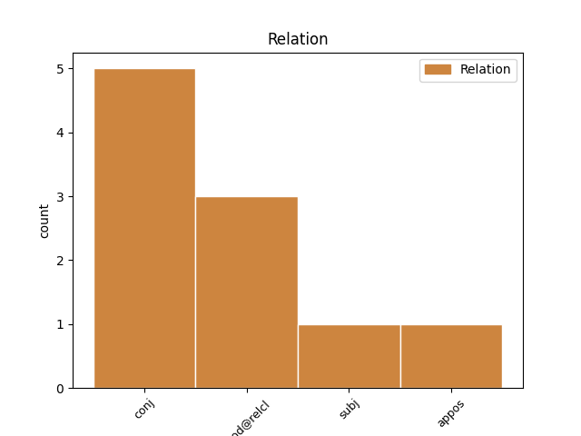
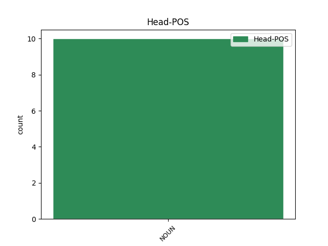
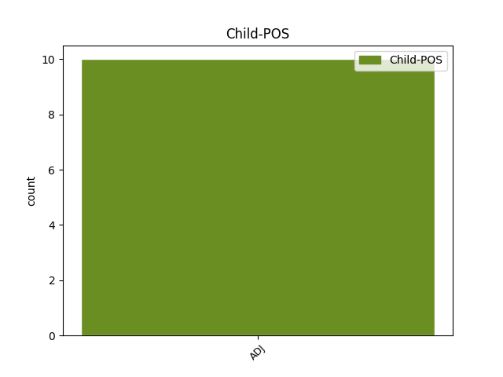

Distribution of features within this leaf



Agreement Rules sorted by frequency.
- When the dependent token is the conjunct(conj) of the head token, and the head token is NOUN and the dependent token is ADJ.
1 и _ _ _ _ 0 _ _ _
2 икону _ _ _ _ 0 _ _ _
3 держит _ _ _ _ 0 _ _ _
4 стая _ _ _ _ 0 _ _ _
5 чуть _ _ _ _ 0 _ _ _
6 колышемых _ _ _ _ 0 _ _ _
7 стрекоз _ _ _ _ 0 _ _ _
8 , _ _ _ _ 0 _ _ _
9 синий _ _ _ _ 0 _ _ _
10 блещущий _ _ _ _ 0 _ _ _
11 оклад оклад NOUN NOUN Animacy=Inan|Case=Nom|Gender=Masc|Number=Sing 0 _ _ _
12 , _ _ _ _ 0 _ _ _
13 под _ _ _ _ 0 _ _ _
14 водою _ _ _ _ 0 _ _ _
15 слышен слышный ADJ ADJ Degree=Pos|Gender=Masc|Number=Sing|Variant=Short 11 conj _ _
16 клад _ _ _ _ 0 _ _ _
17 , _ _ _ _ 0 _ _ _
18 слышно _ _ _ _ 0 _ _ _
19 пение _ _ _ _ 0 _ _ _
20 и _ _ _ _ 0 _ _ _
21 звуки _ _ _ _ 0 _ _ _
22 , _ _ _ _ 0 _ _ _
23 как _ _ _ _ 0 _ _ _
24 в _ _ _ _ 0 _ _ _
25 тоске _ _ _ _ 0 _ _ _
26 ломают _ _ _ _ 0 _ _ _
27 руки _ _ _ _ 0 _ _ _
28 , _ _ _ _ 0 _ _ _
29 как _ _ _ _ 0 _ _ _
30 баюкает _ _ _ _ 0 _ _ _
31 вода _ _ _ _ 0 _ _ _
32 древних _ _ _ _ 0 _ _ _
33 раковин _ _ _ _ 0 _ _ _
34 года _ _ _ _ 0 _ _ _
35 . _ _ _ _ 0 _ _ _
1 ЛДПР _ _ _ _ 0 _ _ _
2 заступается _ _ _ _ 0 _ _ _
3 за _ _ _ _ 0 _ _ _
4 валютных _ _ _ _ 0 _ _ _
5 ипотечников _ _ _ _ 0 _ _ _
6 перед _ _ _ _ 0 _ _ _
7 ЦБ _ _ _ _ 0 _ _ _
8 и _ _ _ _ 0 _ _ _
9 обсуждает _ _ _ _ 0 _ _ _
10 блокчейн _ _ _ _ 0 _ _ _
11 - _ _ _ _ 0 _ _ _
12 Новостной новостный ADJ _ Case=Nom|Degree=Pos|Gender=Masc|Number=Sing 13 subj _ _
13 портал портал NOUN _ Animacy=Inan|Case=Nom|Gender=Masc|Number=Sing 0 _ _ _
14 о _ _ _ _ 0 _ _ _
15 финансовых _ _ _ _ 0 _ _ _
16 рынках _ _ _ _ 0 _ _ _
17 , _ _ _ _ 0 _ _ _
18 инвестициях _ _ _ _ 0 _ _ _
19 и _ _ _ _ 0 _ _ _
20 биржевой _ _ _ _ 0 _ _ _
21 ... _ _ _ _ 0 _ _ _
Disagree Examples:
1 Он _ _ _ _ 0 _ _ _
2 мне _ _ _ _ 0 _ _ _
3 друг друг NOUN _ Animacy=Anim|Case=Nom|Gender=Masc|Number=Sing 0 _ _ _
4 , _ _ _ _ 0 _ _ _
5 я _ _ _ _ 0 _ _ _
6 ему _ _ _ _ 0 _ _ _
7 нелюбимая нелюбимый ADJ _ Case=Nom|Degree=Pos|Gender=Fem|Number=Sing 3 conj _ SpaceAfter=No
8 . _ _ _ _ 0 _ _ _
1 Застыть _ _ _ _ 0 _ _ _
2 привычно _ _ _ _ 0 _ _ _
3 почемучкой _ _ _ _ 0 _ _ _
4 , _ _ _ _ 0 _ _ _
5 задрав _ _ _ _ 0 _ _ _
6 башку _ _ _ _ 0 _ _ _
7 , _ _ _ _ 0 _ _ _
8 Опасливо _ _ _ _ 0 _ _ _
9 корявой _ _ _ _ 0 _ _ _
10 ручкой _ _ _ _ 0 _ _ _
11 махнуть _ _ _ _ 0 _ _ _
12 божку _ _ _ _ 0 _ _ _
13 , _ _ _ _ 0 _ _ _
14 В _ _ _ _ 0 _ _ _
15 бессмыслице бессмыслица NOUN _ Animacy=Inan|Case=Loc|Gender=Fem|Number=Sing 0 _ _ _
16 , _ _ _ _ 0 _ _ _
17 когда _ _ _ _ 0 _ _ _
18 всё _ _ _ _ 0 _ _ _
19 ясно ясный ADJ _ Degree=Pos|Gender=Neut|Number=Sing|Variant=Short 15 mod@relcl _ SpaceAfter=No
20 , _ _ _ _ 0 _ _ _
21 искать _ _ _ _ 0 _ _ _
22 ответ _ _ _ _ 0 _ _ _
23 . _ _ _ _ 0 _ _ _
1 Но _ _ _ _ 0 _ _ _
2 это _ _ _ _ 0 _ _ _
3 ислам ислам NOUN _ Animacy=Inan|Case=Nom|Gender=Masc|Number=Sing 0 _ _ _
4 , _ _ _ _ 0 _ _ _
5 понятно понятный ADJ _ Degree=Pos|Gender=Neut|Number=Sing|Variant=Short 3 conj _ SpaceAfter=No
6 , _ _ _ _ 0 _ _ _
7 что _ _ _ _ 0 _ _ _
8 для _ _ _ _ 0 _ _ _
9 других _ _ _ _ 0 _ _ _
10 религий _ _ _ _ 0 _ _ _
11 это _ _ _ _ 0 _ _ _
12 несвойственно _ _ _ _ 0 _ _ _
13 . _ _ _ _ 0 _ _ _
1 это _ _ _ _ 0 _ _ _
2 ваза ваза NOUN NOUN Animacy=Inan|Case=Nom|Gender=Fem|Number=Sing 0 _ _ _
3 это _ _ _ _ 0 _ _ _
4 ловко ловкий ADJ ADV Degree=Pos|Gender=Neut|Number=Sing|Variant=Short 2 conj _ _
5 это _ _ _ _ 0 _ _ _
6 свечка _ _ _ _ 0 _ _ _
7 это _ _ _ _ 0 _ _ _
8 снег _ _ _ _ 0 _ _ _
9 это _ _ _ _ 0 _ _ _
10 соль _ _ _ _ 0 _ _ _
11 и _ _ _ _ 0 _ _ _
12 мышеловка _ _ _ _ 0 _ _ _
13 для _ _ _ _ 0 _ _ _
14 веселья _ _ _ _ 0 _ _ _
15 и _ _ _ _ 0 _ _ _
16 для _ _ _ _ 0 _ _ _
17 нег _ _ _ _ 0 _ _ _
18 здравствуй _ _ _ _ 0 _ _ _
19 бог _ _ _ _ 0 _ _ _
20 универсальный _ _ _ _ 0 _ _ _
21 я _ _ _ _ 0 _ _ _
22 стою _ _ _ _ 0 _ _ _
23 немного _ _ _ _ 0 _ _ _
24 сальный _ _ _ _ 0 _ _ _
25 волю _ _ _ _ 0 _ _ _
26 память _ _ _ _ 0 _ _ _
27 и _ _ _ _ 0 _ _ _
28 весло _ _ _ _ 0 _ _ _
29 слава _ _ _ _ 0 _ _ _
30 небу _ _ _ _ 0 _ _ _
31 унесло _ _ _ _ 0 _ _ _
1 Но _ _ _ _ 0 _ _ _
2 нет _ _ _ _ 0 _ _ _
3 Он _ _ _ _ 0 _ _ _
4 проводил _ _ _ _ 0 _ _ _
5 Меня _ _ _ _ 0 _ _ _
6 в _ _ _ _ 0 _ _ _
7 тернистый _ _ _ _ 0 _ _ _
8 путь _ _ _ _ 0 _ _ _
9 И _ _ _ _ 0 _ _ _
10 если _ _ _ _ 0 _ _ _
11 разомкнуть _ _ _ _ 0 _ _ _
12 Реченье реченье NOUN NOUN Animacy=Inan|Case=Acc|Gender=Neut|Number=Sing 0 _ _ _
13 Путь _ _ _ _ 0 _ _ _
14 Тернист тернистый ADJ ADJ Degree=Pos|Gender=Masc|Number=Sing|Variant=Short 12 appos _ _
15 Мне _ _ _ _ 0 _ _ _
16 достается _ _ _ _ 0 _ _ _
17 Путь _ _ _ _ 0 _ _ _
18 Ему _ _ _ _ 0 _ _ _
19 боюсь _ _ _ _ 0 _ _ _
20 Тернист _ _ _ _ 0 _ _ _